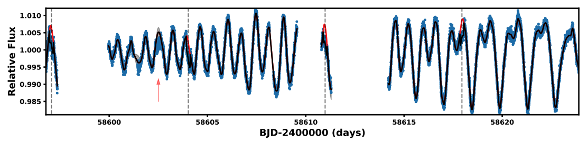
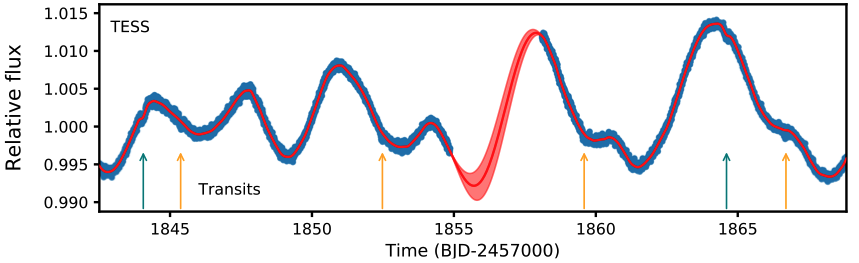

STATUS UPDATE: Sector 23 data went live at MAST this week and we are currently observing in Sector 24 until May 12.
Welcome TESS followers! We here in the TESS GI office plan to issue weekly news bulletins to keep you informed of all things TESS related and to also highlight your work.
Below we highlight four papers that were posted to arXiv.org in the last week:
-
Original Research By Young Twinkle Students (ORBYTS): Ephemeris Refinement of Transiting Exoplanets (Edwards et al., 2020) : Eight planets are studied in detail and their ephemeris and orbital data are refined. Data used are that from TESS and fully robotic ground-based telescope network. For seven of the planets the authors find that the observed transit time was outside of the predicted uncertainties.
-
TESS Asteroseismic Analysis of the Known Exoplanet Host Star HD 222076 (Jiang et al., 2020) : Using TESS data the paper presents an asteroseismic analysis of the red giant star HD 222076 (discovered by Wittenmyer et al 2017) which has a long period giant planet that was discovered via radial velocity measurements. Asteroseismic modeling has determined the mass of the star as 1.12 M⊙, with a radius of 4.34 R⊙, and an age of 7.4 Gyr.
-
TESS Hunt for Young and Maturing Exoplanets (THYME) II: A 17 Myr Old Transiting Hot Jupiter in the Sco-Cen Association (Rizzuto et al., 2020) : A 17Myr old transiting hot Jupiter was discovered around HIP 67522, a 10-20 Myr old Sco-CenO OB star. The orbital period of the planet was identified as 6.96 days with a radius of 10.02 R⊕. An additional planet candidate was also identified with an orbital period of ~23 days and a radius of ~8 R⊕. The hot Jupiter HIP 67522b is the youngest confirmed transiting hot Jupiter-sized planet discovered to date.
-
TESS Hunt for Young and Maturing Exoplanets (THYME) III: a two-planet system in the 400 Myr Ursa Major Group (Mann et al., 2020) : This paper presents the discovery of two planets orbiting a young Sun-like star (M = 0.99⊙) HD 63433. HD 63433 was determined to be part of the 414 Myr old Ursa Major moving group. The planets have radii of 2.15R⊕, and 2.67R⊕ respectively, with orbital periods of 7.11 and 20.55 days. The system is important as it will aid our understanding of planetary system evolution in the first billion years after formation.

Fig. 1: Taken from Rizzuto et al., (2020): Light curve of HIP 67522 from TESS sector 11. These data have been corrected for systematics using the co-trending bias vector method described in Smith et al (2012) - blue points. The Gaussian Process model from the simultaneous transit and variability of the fit described in Section 5.1 of the paper - black line.

Fig. 2: Taken from Mann et al., (2020), illustrating the TESS light-curve of HD 63433. The top panel shows the presearch data conditioning simple aperture photometry curve in blue after fitting out the outliers, the Gaussian process model is given in red. The locations of the transits are shown with arrows along the x-axis. The orange represent planet b and the teal planet c.